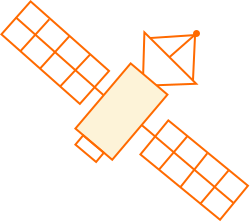

data junky...
satellite lover...
I am a second year M.S. student at Michigan State in the Department of Plant Biology, working with Dr. Kyla Dahlin. My research is focused on developing open-source machine learning frameworks for mapping forest structure using a multi-sensor approach.
A key goal in building these models is disentangling relationships between the landscape, climate, and sensor configurations that influence model predictions. Understanding these relationships allows us to adapt model architecture, transfer across new regions and data sources, and improve interpretability. Broadly speaking, I am a bit of a LiDAR fanatic with a passion for understanding how we can better observe Earth’s surface. Also like… lasers in space. C’mon. It’s f*cking awesome.
Outside of coding and science, I’m a devotee of mid-century design (can you tell?) and a reader of 70s sci-fi. I would call myself a chronic dreamer of life beyond Earth, whether that be through space-age design, fiction, or the way I observe the world.
I hope no matter the reason you landed here, you stay for a little bit of science, nonsense, and maybe even learn something new.